A Greenfield app for the Australian ETA Visa
How I've automated data entry and improved the experience of those applying for an Electronic Travel Authority (ETA) visa before travelling to Australia

 Summary
Summary
The Department of Home Affairs was finding it difficult to manage the ETA visa data mismatch, due to the time it took to update the traveller data and interact with airlines/gates.
The Work
What do we already know? Some known facts
An ETA is an electronically stored authority equivalent to an e-visa, which is linked to a passport number.
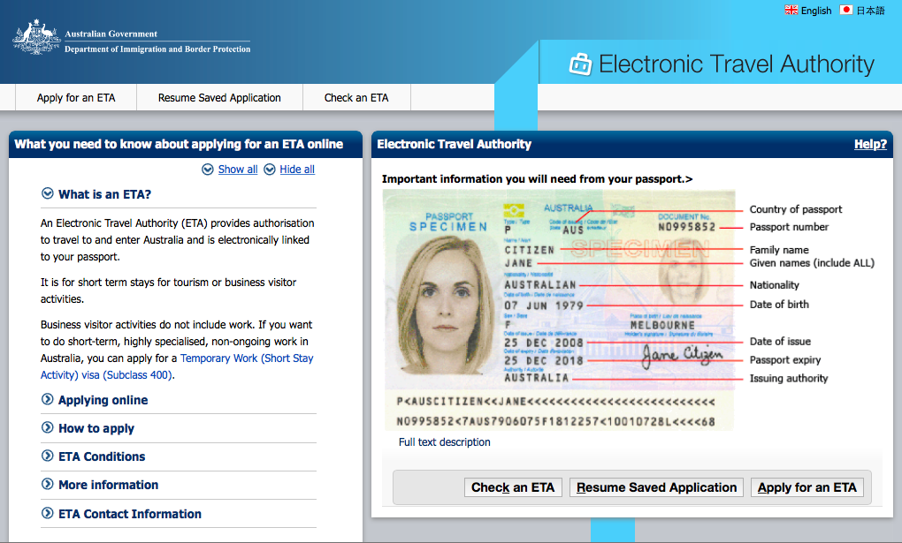Australian Government ETA web-based website
When the project started, the Department of Home Affairs offered an ETA product (web-based website) as the primary entry point for users to apply for the ETA, to facilitate clients from nominated countries visiting Australia for short-term tourist or limited business activities. The process could take anywhere from a week to two months.
Immersion and Observations
I wanted to meet with those who were significantly involved in the visa approval process the border control and management providers. Therefore, I contacted the key stakeholders in Sydney, SITA and the Department of Home Affairs. I gained access to relevant and high-security data and also interviewed some of their staff. Some data analysed:
- Quantity of ETAs processed
- % of data success rate, and ETAs not completed
- Average % of processing time of ETAs
- Data accuracy recorded from the last year
Understanding the Problem
Before visiting Australia, people need to apply for a visa and manually fill out a multi-page form on the ETA website with the following information:
- Passport information
- Identity details
- Personal information
- Visitor integrity information
Competitive Research
We also analysed worldwide business trends on e-visas and found out that:
Malaysia was the first country from APAC to collect biometrics through visa applicants and now expected to have the largest market share in the Asia-Pacific e-visa market.
Countries that have additional support for e-visas have helped the market share grow in the region.
Early Insight
The need for smart processes that eliminate manual entries and support operators and the demand for flexibility and scalability, are expected to be the key drivers for the future.
(Re-)Defining the Problem
I took a few steps back and looked at the original challenge again. This time, with much more context to the problem.
What were we trying to achieve?
Improve the quality of data from travellers and improve the application user experience
Why were we not achieving the goal yet?
Traveller data was manually entered in a web-based application
What could be a solution to the problem?
A solution to improve the data quality could be capturing the biometrics and passport chip information using a mobile app to extract the data
How might we test a solution hypothesis?
Implement an external SDK module on a mobile app, where we could test the impact of using the device's capabilities to collect biometrics
Problem Statement & Design Prompt
The manual method of data entry has downstream impacts on the border process as it is susceptible to accidental human error
Design an improved ETA application experience that will help travellers to Australia apply for an e-visa using their personal device.
Requirements from Business
- Reach the desired goal of 100% e-chip biographic and biometric data held on the passport
- A live facial image
- Improve data integrity
- Reduce time spent updating client data
- Reduce time spent interacting with airlines/gates when there is a data mismatch
Constraints
SDK technology to scan passports had lots of limitations:
- No user controls in the interface to lock the camera focus
- No clear feedback on errors
- The user could not choose device orientation
Desirable user needs outcomes
- Reduce impacts on the border process
- Meet the need for a fast ETA approval process
- Remove or reduce the manual entry when people are applying for an ETA
The Minimum Viable Product for the ETA mobile app would be the capability to capture the passport data and user biometrics, and also enable users to easily pay for an ETA application using their device.
Features to be rolled out after the MVP phase
The user would be able to add multiple travellers' ETA applications, bucket payments and submissions.
Exploring Solutions
Due to the complexity of the problem, I started sketching some possible solutions and decided to break it down into a few "How might we" questions, allowing me to focus on one challenge at a time.
How might we easily guide the user step by step, to capture user and passport biometrics?
How might we automatically capture data from the user's passport using the user's personal device?
How might we design and develop an ETA mobile app to improve the quality of data received from the traveller, capture the biometrics of the applicant and improve the overall user experience in applying for an ETA?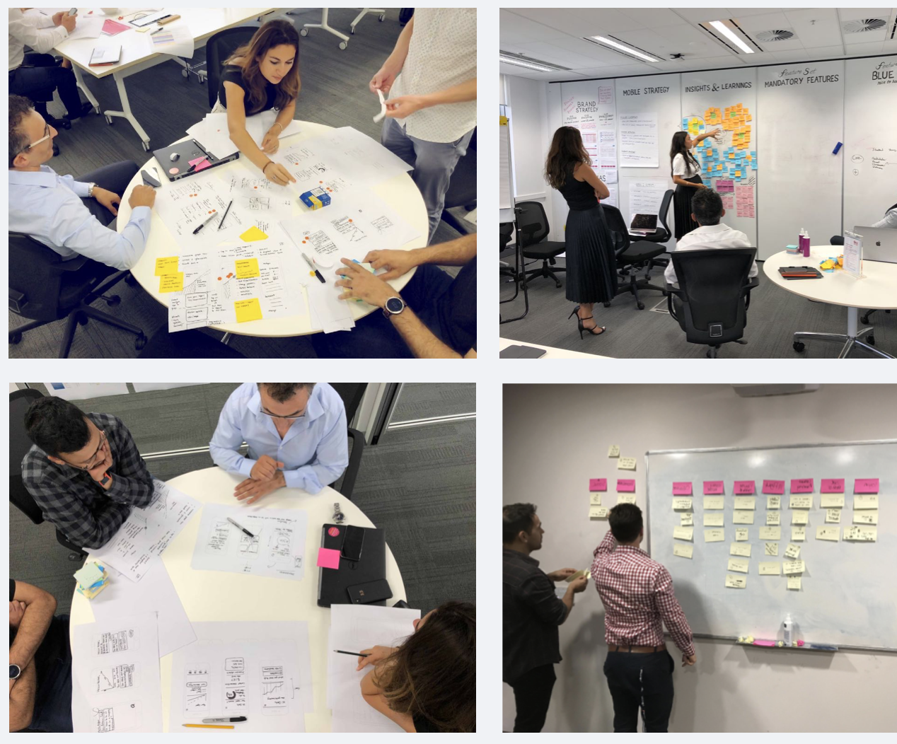
The goal:
Improve the ETA application experience for travellers wanting to visit Australia
Identified Jobs to be done:
Given the ideas that came up in the sketching sessions, I defined which solutions had the most potential to effectively solve the problem and decided to map out a possible main user flow.
- Capture a passport photo
- Scan passport using NFC
- Take a face capture (selfie)
- Confirm Information
- Pay for the ETA
- Submit application
User Flows & Wireframing
As the solution became increasingly clear, so did the level of detail and fidelity of the artefacts. At this point, I began to explore user flows in more detail, while at the same time considering possible interactions and interfaces.
Prototype & User Testing
I ran user testing with 8 participants combining early design concepts and the biometrics SDK software we would incorporate in the app. Our primary objective was to identify:
- First impressions of the app
- How it compares to expectations
- How understandable the screens, sequence and questions are
- Perceived ease of use
- Ease of navigation
- Task satisfaction
- Learnability
User Testing Results
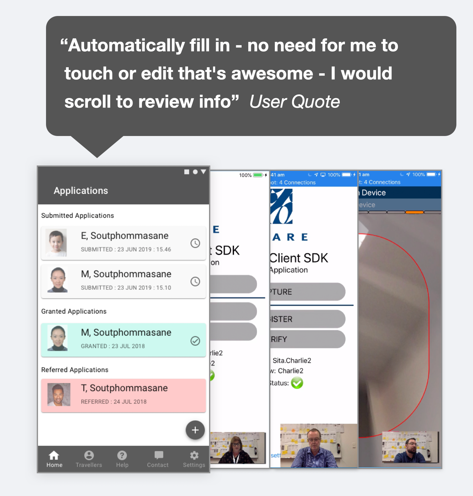- Most of the flow met their expectations
- Some were hesitant about the app and the T&Cs of the app individually
- Reducing the number of permission screens would increase favourability
- Changes to text and descriptions should resolve most misunderstandings
App Onboarding and Registration
Due to the legal complexity of collecting private and biometrics data from users, the onboarding and registration process was 5 multi-complex steps where users needed to view, acknowledge and agree.
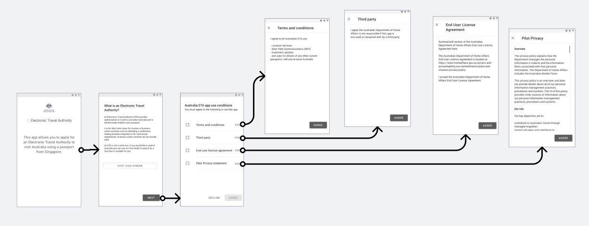Design Iterations
We tried different approaches to reduce the steps from the user side and had approval from the legal team.
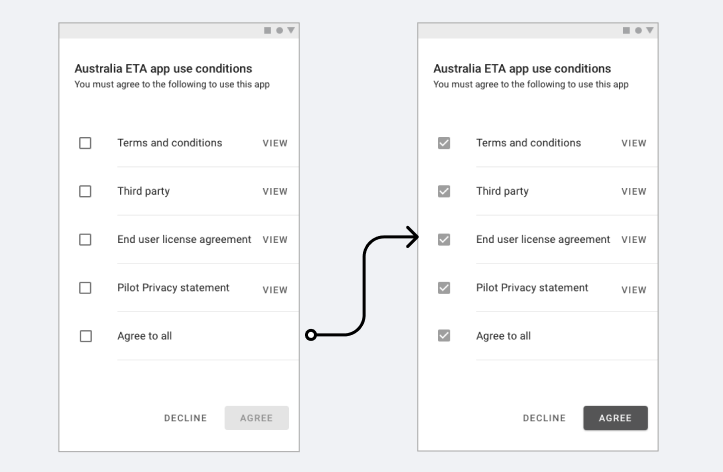My approach was to remove the checkboxes and merge the agreements into a single page.
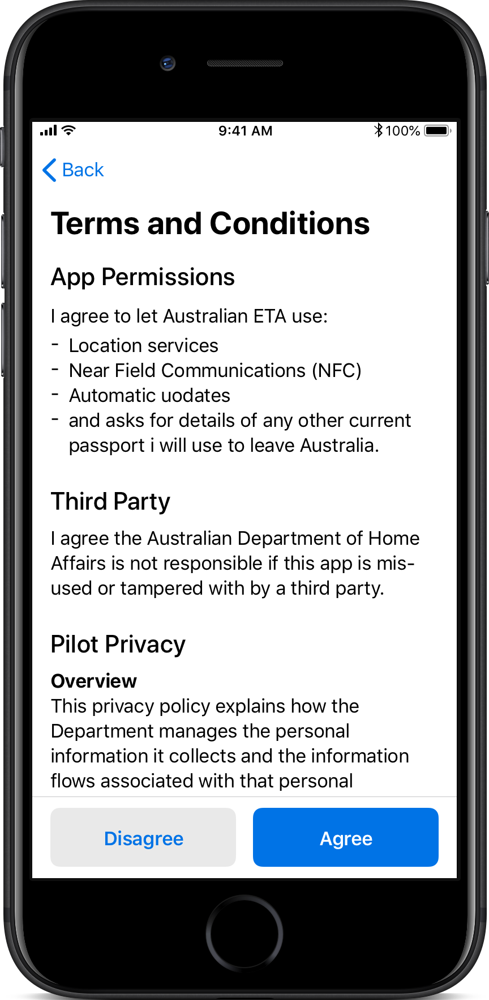Solution Implemented
Designing the Details
The design principles that I focused on most for this project were accessibility and inclusion, as it is an application that people from different cultures and age groups can use. Some of the guidelines I had in mind while creating the user interface were:
The app provides a utility so the interface should feel native and simple to the device the person is using
The colours used in the design were adapted from the Home Affairs Brand guidelines to create customer empathy through the visual and brand connection.
The preferred typeface from the Brand Guidelines was Helvetica Neue, but since the App is heavy on data, I chose to use the device's native fonts to minimise the screen load so that the app feels light weight as user actions should be quick to respond.
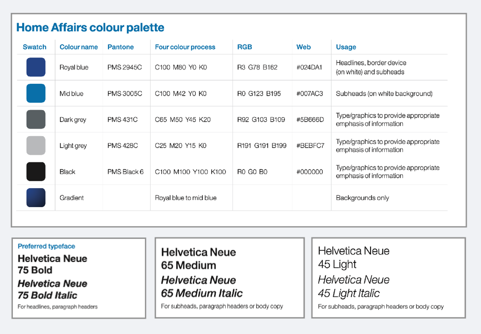Final results

Dashboards
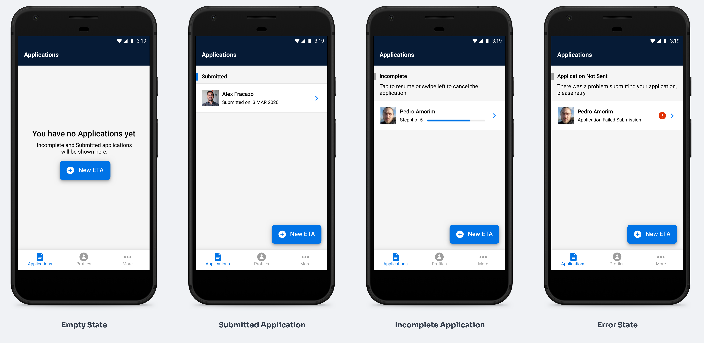Capture Passport Photo
One of the biggest trade-offs for this project was having to compromise usability. We had to change the design of the passport capture screen to accommodate an SDK interface from an external provider, we were using their service to capture the passport information and process it into data.
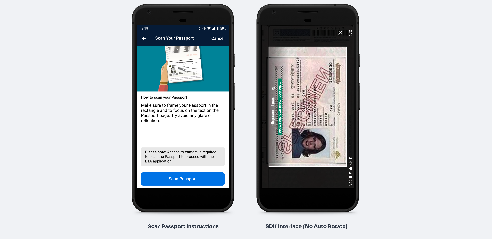NFC Scan
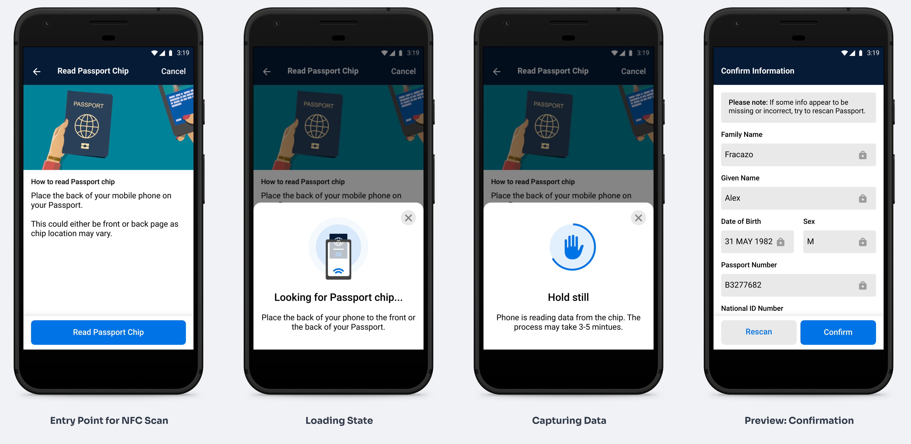Live Photo Capture
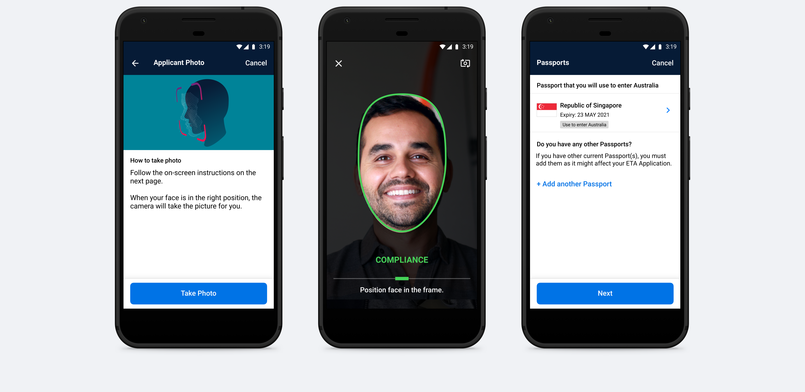 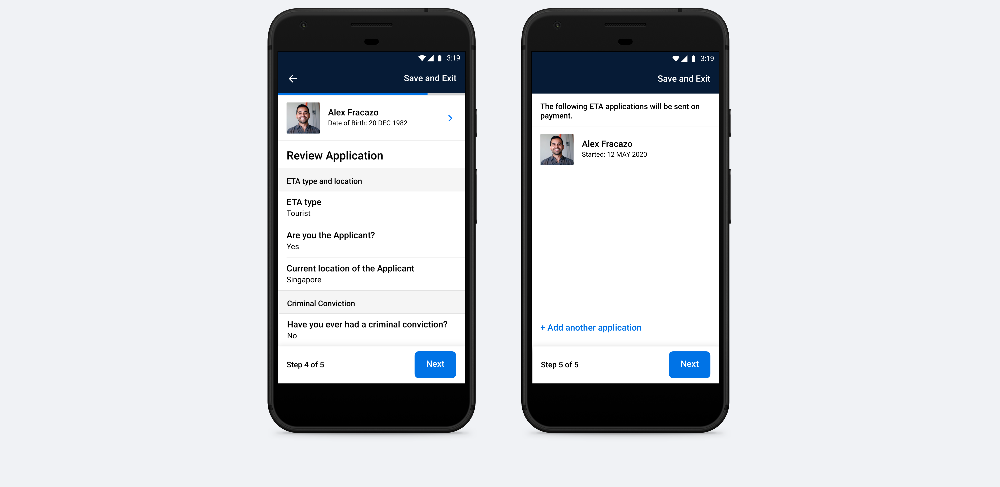 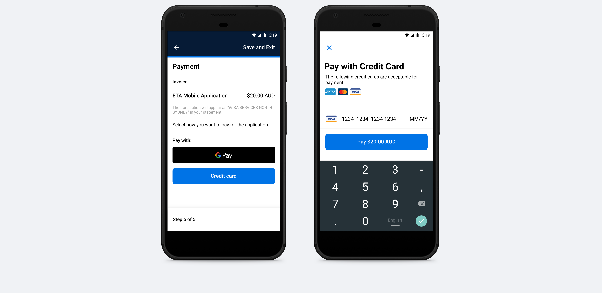 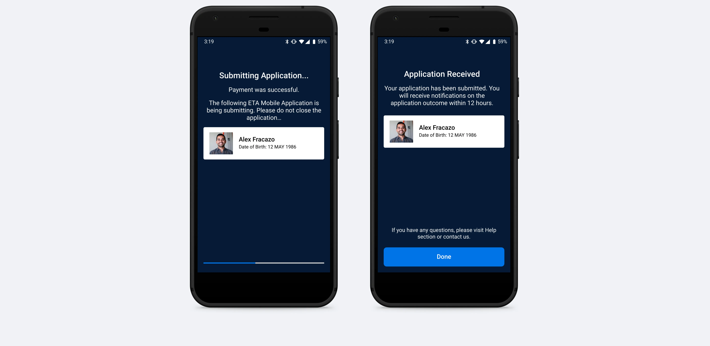Copywriting & Microcopy
Microcopy played a huge role in product design, many rounds of copy review went into this project. Some guidelines used in the designs and development were related to title style capitalisation.
Building Phase
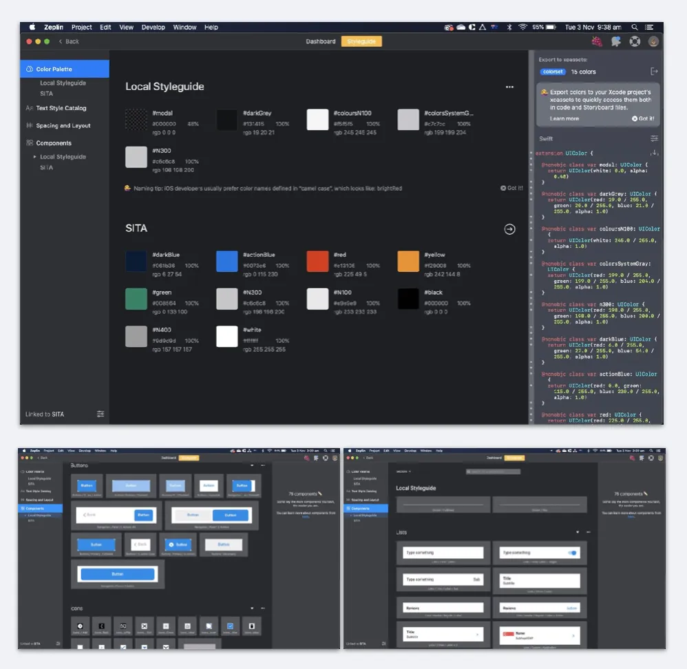Working with engineers is a big part of my role which I love. For this project, I've used Sketch, Abstract and Zeplin, which work great for syncing files and providing developers with assets.
Assets were created for Android and iOS
Delightful Details
There's a user expectation of how these types of UIs operate, so there aren't many opportunities to take a conceptually unique approach. My solution was to design a "standard" step-by-step app that included fun details where possible, such as loading state and user feedback animations.
Key Learnings
- Using an external SDK provider made our team more agile on deliverables
- I learned how to work with the legal team. I organised multiple showcases and workshops that helped to bring clarity on why we were doing this and how it was aligned with the company's key objectives and unblocked the team
Next Steps
- Checking analytics to see where users would drop off
- Creating a feature where the user could get help
Additional metrics I would look for
- % time of visa application process
- % of visa applications using the ETA app compared with web-based Visa applications
- % of data accuracy reported by the Department of Home Affairs
- % of visa applications via the ETA App
- % of abandoned applications via the ETA App compared with web-based Visa applications

Protecting Data Privacy
The case study shows fictitious figures, allowing the necessary contextual information to enable the evaluation of the methodologies used.
Up Next

Reimagining the Entertainment Experience
Building more than just a product, a brand experience for Qantas Entertainment

Bringing Entertainment to Qantas Airways app
How to increase app downloads by +70% by connecting entertainment services

Bringing Visibility to Workers' Status
How we changed user behaviour by design and increased bookings by +12%